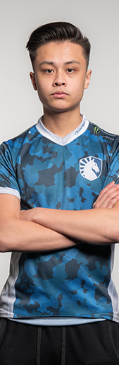

Николас " nitr0 " Каннелла (родился 16 августа 1995 года) - американский профессиональный Counter-Strike: Global Offensive и бывший профессиональный игрок Counter-Strike , который в настоящее время играет за Team Liquid .
Джонатан " EliGE " Яблоновский (родился 16 июля 1997 года) - американский профессиональный игрок Counter-Strike: Global Offensive польского происхождения, который в настоящее время играет за Team Liquid . Его конкурентный опыт лежит в StarCraft II .
Джеки «Джейк» « Stewie2K » Ип (род. 7 января 1998 года) - американский профессиональный игрок Counter-Strike: Global Offensive , который в настоящее время играет за Team Liquid в качестве лидера в игре и входного мошенника . Он является одним из самых выдающихся игроков в Северной Америке, несмотря на то, что играл в CS: GO только с лета 2014 года. 11 января 2016 года Stewie2K присоединился к Cloud9 . Хотя первоначальное объявление о том, что он присоединится к Cloud9, было встречено с критикой со стороны как профессионалов, так и публики, таких как Торин, критикующий решение, Stewie2K вскоре стал известен как один из лучших игроков в Cloud9. После 2 лет в реестре иКрупная победа под его поясом, он решил двигаться дальше и присоединиться к SK Gaming под руководством бразильской Legend FalleN, заменив TACO в их активном составе. Через 3 месяца он был подписан MIBR вместе с другими игроками SK Gaming . После нескольких месяцев хороших результатов Stewie2K вернулся к своим североамериканским корням и присоединился к Team Liquid .
Рассел " Twistzz " Ван Далкен (родился 14 ноября 1999 года) - канадский профессиональный игрок Counter-Strike: Global Offensive , который в настоящее время играет за Team Liquid .
Кит " NAF " Маркович (родился 24 ноября 1997 года) - канадский профессиональный игрок Counter-Strike: Global Offensive , который в настоящее время играет за Team Liquid .